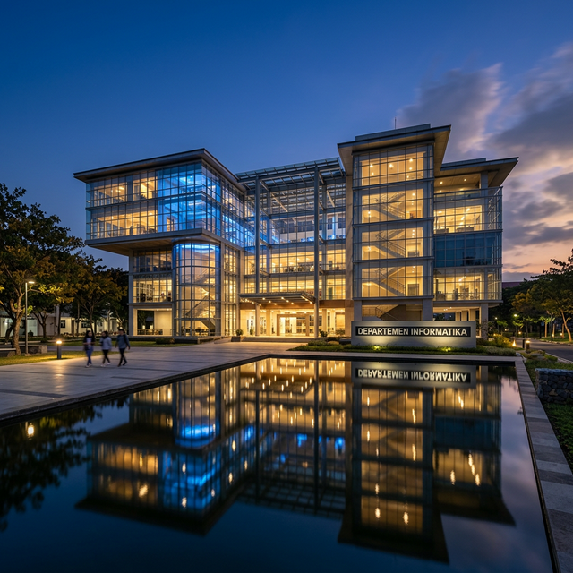
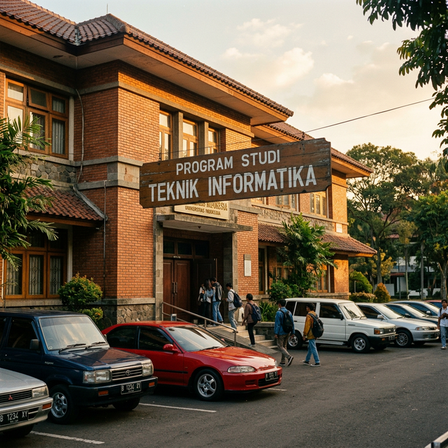
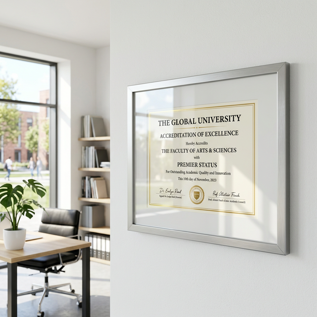
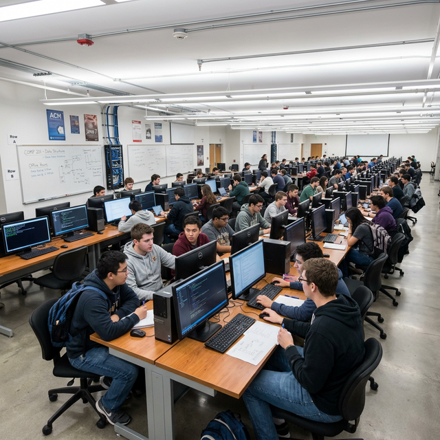
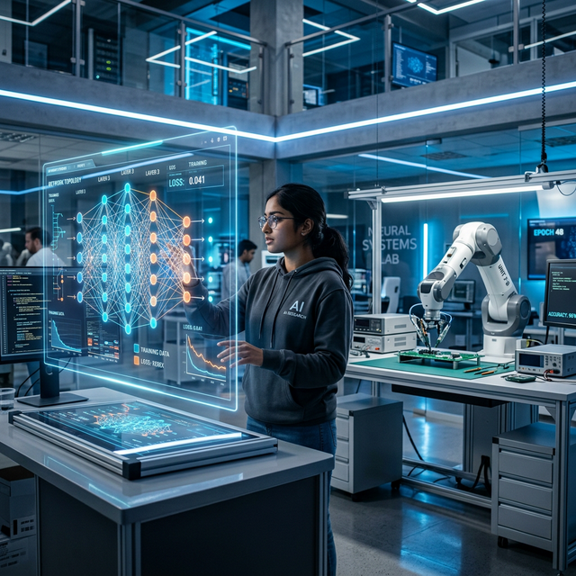

Profil Jurusan
Perjalanan panjang kami dalam membentuk generasi teknologi bangsa.
Program studi Teknik Informatika resmi didirikan sebagai bagian dari Fakultas Teknik dengan total 45 mahasiswa dan 8 dosen tetap. Fokus awal adalah pengembangan perangkat lunak dan matematika komputasi.

Program studi berhasil meraih akreditasi A dari BAN-PT untuk pertama kalinya, menjadikannya salah satu prodi informatika unggulan di Indonesia. Jumlah mahasiswa tumbuh pesat menjadi 300 orang.

Program studi bertransformasi menjadi Departemen Informatika dengan pembukaan tiga lab riset baru: Lab AI & Machine Learning, Lab Jaringan & Keamanan Siber, dan Lab Rekayasa Perangkat Lunak.

Menandatangani MoU dengan 5 universitas luar negeri di Eropa dan Asia, serta membuka program double degree pertama bagi mahasiswa berprestasi. Lebih dari 50 publikasi internasional dihasilkan per tahun.
Memasuki era baru dengan kurikulum berbasis AI dan komputasi awan. Lebih dari 500 mahasiswa aktif, 90% lulusan terserap dunia kerja dalam 6 bulan pertama. Meraih akreditasi Unggul (setara A) dari BAN-PT.
